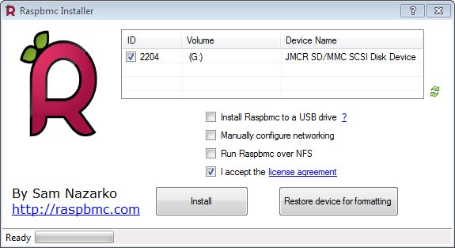
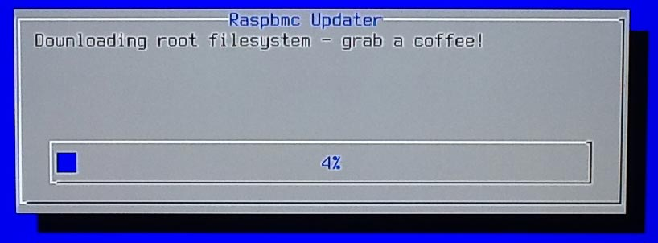

Instalación de Raspbmc
Realmente no se trata de una instalación ya que realmente solo hay que insertar la imagen en la tarjeta SD, ponerla en la Raspberry Pi y el solito se instala y al reiniciar iniciará el entorno de XBMC(Kodi), pero aún así os enseñare ese pequeño paso. Primero descargamos el instalador oficial de Raspbmc desde aquí para meter la imagen en la tarjeta SD aunque se puede hacer por otras vías como ya mencioné aquí
Una vez instalado y ejecutado el programa se inserta la tarjeta SD en nuestro Windows y verificada por el programa se marca la casilla aceptando los términos de usos y se le da a Install 
Ahora toca poner la tarjeta SD en la Raspberry Pi recordar que la alimentación hay que poner lo último. Una vez puesta se iniciará tardará bastante de modo que puedes tomarte un cafe. 
Cuando se reinicie ya saldrá el entorno gráfico de XBMC(Kodi). El nombre de usuario por defecto es: pi y su contraseña: raspberry.